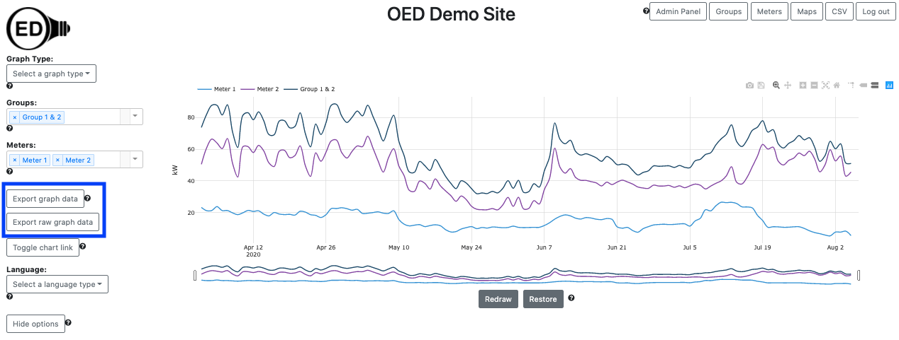

OED is an open system that believes that your site data belongs to you and should be readily available. The ability to export data is the feature that lets you get the data. You may want to do this to work on it outside OED or to transfer the data to another system. OED uses the vendor neutral CSV (Comma Separated Value) spreadsheet format for exported data.
One nice feature is that you get the data associated with the graphic you are displaying. This means you can select meters/groups, time ranges to plot, etc. and visualize them in OED before you export the data. Once the graphic contains the data you want, you can either click the "Export graph data" button or "Export raw graph data" button (both inside blue box in next figure which is for a user with admin privileges) to initiate the export.
The "Export graph data" will give you the points on the OED graphic that is being displayed. The size of the exported file will not be large because you are getting the graphic points as described in the line graphic details. The "Export raw graph data" will give you the original (raw) meter data that was used to create the graphic. Since this is the raw meter data, group data on display in the graph are not included in the export of raw data.
The size of this CSV file scales with the number of meter points and can be large. To avoid accidental or inappropriate downloads of large files, OED does the following:
Note that you will be told you cannot download the data if you don't have appropriate privileges. The download of the raw data as a CSV will take longer than the network transfer time because OED must get the data from the database and format into a CSV.
A CSV file will be placed where your downloaded web browser files go. It will be named "oedExport...." or "oedRawExport...." where the .... has the graphic type and date ranges involved. For example, the exported data for the graphic shown in the figure above had the name "oedExport_line_April_2_2020_12_00_00_AM_to_August_5_2020_12_00_00_AM.csv" and for the raw export it had the name "oedRawExport_line_April_1_2020_1_00_00_AM_to_August_6_2020_2_00_00_PM.csv". Note that the dates are slightly earlier and later in the name for the raw file. This is due to the fact that OED did some readings averaging on the line graph as described in the line graphic details. Also note that if different meters/groups have different ranges of dates then one of them will be used for the file name.
Exporting bar graphics data is similar to line graphics except you only have the option to "Export graph data". You cannot export raw data since a bar graphic sums data over a range of time. The line graphic allows you to see the raw meter data if that is desired.
You can export line and bar graphic data. You cannot export compare and map graphic data. There did not seem to be a need for compare and maps since compare has very limited data and maps are very much tied to the geographical location. Furthermore, the data shown on compare and maps is, in a general way, a subset of the bar graphic.
The time range is considered the full time shown on the line graphic (not just the zoomed in time) so you will see that unless you redraw to reduce the time range. (see redraw information)
Since version 0.8.0, exported data includes both the start and end date/timestamp. This provides more information that could be useful. Also note that the first column is the meter/group name. You can import data that was exported by OED but you need to remove the first column and include the meter name in the import parameters. Finally, you can export multiple meters at a time but you can only have one meter of data for import. If you plan to import the exported data then do the export one meter at a time or you need to edit the CSV to break it up into one file for each meter.